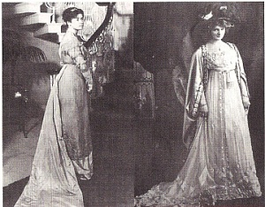
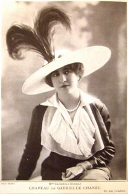
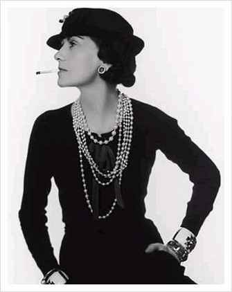
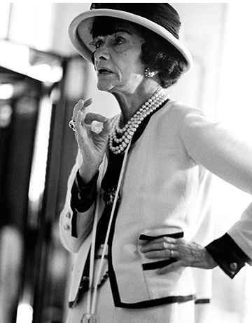
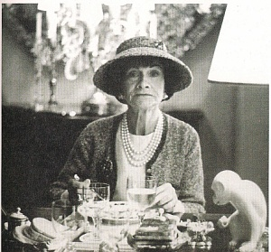
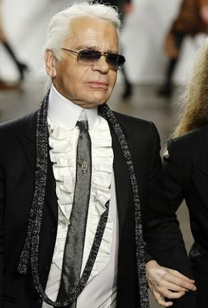

|
| 가브리엘 샤넬의 삶과 CHANEL |
|
1. 출생에서 패션계로의 입문 가브리엘 샤넬은 1883년 8월 19일 프랑스의 서부지방 소뮈르에서 아버지 알베르 샤넬과 어머니 잔 드볼 사이에서 태어 났습니다. 그녀의 부모는 가난하여 빈곤한 생활을 하였으며, 샤넬이 12세가 되던 해 모친의 사망으로 샤넬을 포함한 3남매는 아버지에게 버림 받아 수도원에서 운영하는 고아원에 맡겨지게 됩니다. 불우한 어린시절 보내고 18세가 되던해 수도원을 나와 시골마을 물랑에서 바느질공으로 일하면서 바에서 노래를 부르며 가수를 지망하게 됩니다. 이때 <Ko Ko Ri Ko>와 <Qui qu'a vu Coco dans le Trocadero>라는 노래를 자주 불렀으며, 이 노래는 바를 찾는 많은 사람들에게 인기를 얻어 이때의 코코가 샤넬의 애칭이 되었습니다. 이때 기병대 장교인 에튀엥느 발장을 만나 그를 후견인으로 상류 사회로의 발판을 마련하게 됩니다. 당시 사교계로 이용되던 파리근교의 발장의 목장에서 사교계에 필요한 많은 지식들을 습득하게 됩니다. 이때 승마도 배우면서, 남성용 승마복을 개조하여 입고 나오는 등 이때 부터 패션계로의 가능성을 보였던 듯 합니다. 당시 여성이 남성의 복장을 한다는 자체가 매우 충격적인 일이었다고 합니다. 이런 발상은 남녀의 구분을 확실히 어릴때부터 몸에 익히는 귀족으로 태어나지 않은 그녀만이 할 수 있는 일이었는지도 모르겠다는 생각이 듭니다.

1909년에는 마르젤보 거리 160번지에 여성용 모자를 전문으로 하는 가게을 오픈하게 되며, 1910년에 파리의 캉봉거리 21번지에 <샤넬 모드>라는 모자 전문점을 개업하는데, 샤넬은 이때 발장과 헤어져 샤넬모드의 개업 자금을 후원하고, 평생 연인으로 지낸 영국인 아서 카펠과 교제를 시작합니다.  2. 패션 디자이너로서의 샤넬 1913년 드뷜에 2호점을 내고 세계1차 대전일 발발한 후 1915년에 <메종 드 쿠튀르>를 오픈하였습니다. 당시 1차 대전으로 인해 남자들은 전쟁터로 향했으며, 사회와 공장에는 여성들이 넘쳐 났다고 합니다. 그때 여성들의 복장은 매우 불편하기 그지 없었으며, 코로셋은 여성들의 건강까지 해치고 있었습니다. 이때 샤넬은 남성복의 소재를 여성복에 적용하여 편하고 심플한 의상을 발표하게 되는데, 이 의상은 대 유행을 하게 되고, 그 유행은 전쟁이 끝난 후에도 유지 되어 샤넬을 더욱 유명하게 만들었습니다. 거추장스럽고 불편한 복장과 건강에 매우 좋지 않았던 코르셋으로 부터 여성을 해방시킨 것이 당시 그녀의 업적이 아닐까 합니다.
1918년 1차 대전이 종결되자 카펠과 결혼하였으나, 1919년 사고로 카펠이 사망하자 다시 혼자가 됩니다. 후에도 많은 남자들과 연이 있지만 모두 급사하거나 파산하는 등 불행을 겪게 되는데, 이를 보고 샤넬을 불행한 사자자리의 숙명을 가지고 태어난 여자라 부르기도 합니다.
1920년대에 샤넬은 되빌룩(Deauville Look)을 만들어, 당시를 '되빌시대'라고 부를 정도로 유명해 졌다고 하며, 1923년 미국의 패션잡지 <Bazaar>에 소개되면서 세계적인 디자이너로 발판을 마련하게 됩니다.
 1924년에는 영국의 웨스트민스터 공작을 만나 그의 취미인 보석애호에 의해 모조 보석을 사용한 쥬얼리를 발표하였습니다. 1939년 제2차 세계대전이 발발하자 샤넬은 패션계를 은퇴하게 됩니다. 1940년에 프랑스가 독일군에게 점령당하고, 샤넬은 독일군 장교와 사랑에 빠져 스파이 작전에까지 가담하게 되었다고 합니다. 1944년 프랑스의 샤를르 드골이 이끄는 프랑스군과 연합군이 승리하자 샤넬은 스위스로 망명하여 정착하게 됩니다. 1954년 71세의 나이에 파리로 돌아와 패션계에 복귀하지만, <매국노>라는 꼬리표가 10여년간 샤넬의 발목을 잡았습니다. 이와 반대로 미국에선 그녀의 참신한 패션이 열광적인 선품을 끌었으며, 1955년 울 소재의 새로운 샤넬 슈트를 발표하여 상을 수여하기도 합니다.  1955년 2월 2.55백 출시. 55년 2월에 출시되어 그렇게 이름이 붙여졌다고 합니다. 3. 샤넬의 죽음 1971년, 거주하고 있던 파리의 릿츠 호텔 스위트룸에서 콜렉션을 준비하던 샤넬은 모르핀에 취한채 숨을 거두었으며, 그녀의 유해는 <나치스에 혼을 팔아넘긴 매국노>라는 꼬리표와 함께 조국을 배신한 행위에 의해 프랑스에 묻히는 것을 거부당하여, 망명생활을 했던 스위스 로잔에 매장되었습니다. 
|
| 가브리엘 샤넬의 죽음 이후의 CHANEL |
|
1. 출생에서 패션계로의 입문 샤넬의 죽음과 함께 CHANEL은 하향세를 걷게 되지만, 1983년 독일 출신의 디자이너 카를 라거펠트가 수석디자이너로 임명되면서 CHANEL은 현대적인 디자인으로 발전하게 됩니다. 1987년에는 CHANEL의 최초 시계가 발표되고, 1999년에는 스킨케어 라인인 '프레시지옹(PRECISION)'을 출시합니다. 현재 CHANEL은 패션, 악세사리, 향수, 메이크업, 스킨케어, 쥬얼리 모든 분야에서 명픔으로써의 이미지를 굳건히 하고 있으며, 이는 혁신적인 창업주의 열정과 노력의 결과라 할 수 있을 것 입니다.  |